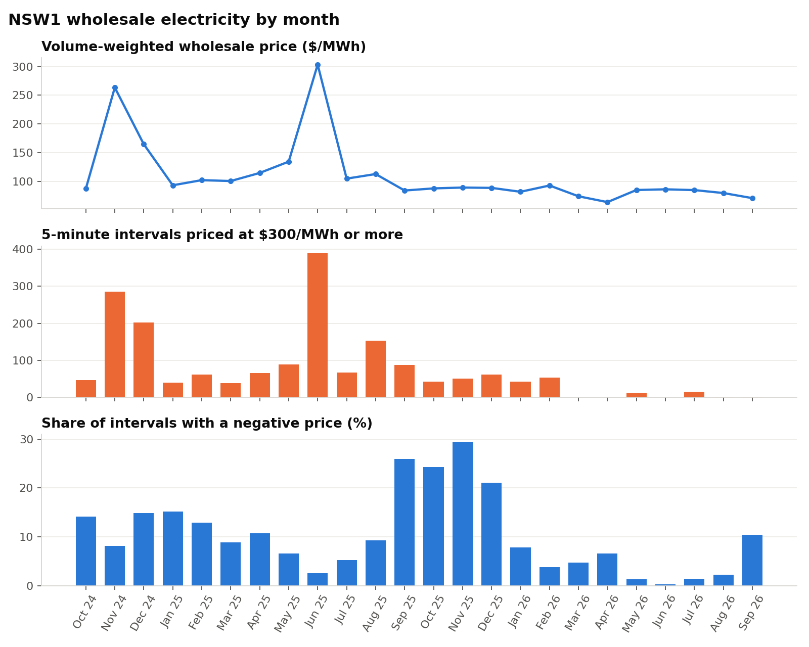
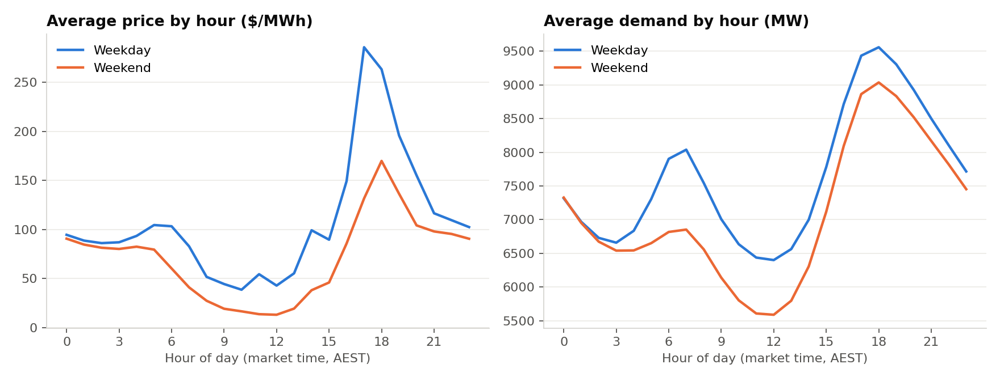
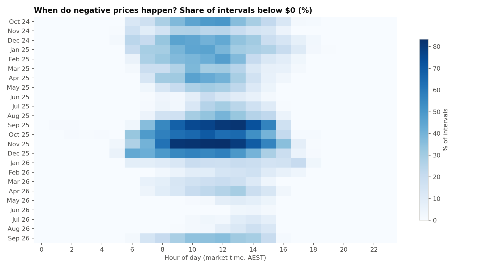
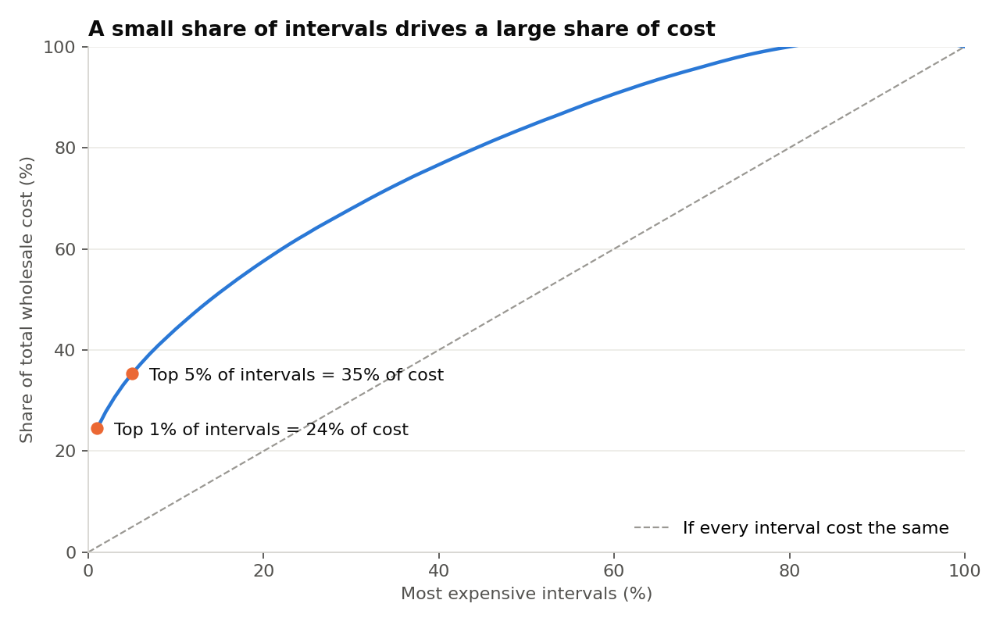

Question: when and why do NSW wholesale electricity prices spike, and how does demand respond to the time of day and the weather?
24%
of total wholesale cost came from the most expensive 1% of 5-minute intervals
10.3%
of all intervals had a negative price, rising to 27.5% on weekdays from 12 to 1pm
5 to 6pm
is the most expensive hour of a weekday, as solar output fades and households come home
13,159 MW
peak demand, on a winter weekday evening (1 July 2025), not a summer heatwave
What I did
1CollectPython scripts download 24 monthly AEMO files and hourly Sydney temperature data.
2ValidateAutomated checks for duplicates, gaps, missing values and out-of-range prices.
3ModelLoad 210,240 intervals into SQLite, with views that fix the timestamp logic once.
4AnalyseSix SQL queries using CTEs and window functions, plus Spearman correlation in Python.
5CommunicateCharts, an interactive dashboard, a Power BI report and a one-page brief.
Data quality
- 210,240 intervals loaded, exactly 730 days of 288 five-minute intervals, with 0 duplicates, 0 gaps and 0 missing values.
- 17,520 hourly temperature readings, every one matched to its market hour.
- Prices ranged from the -$1,000/MWh market floor to the $20,300/MWh market cap.
Things I had to get right
- Timestamps mark the end of an interval. The row stamped 00:00 belongs to the previous day, so I shift every interval by five minutes in a database view before grouping by day or hour.
- One clock for both datasets. AEMO uses Australian Eastern Standard Time all year, so the weather data is requested on the same no-daylight-saving clock.
- Volume-weighted price, not a simple average. The weighted price ($111.64/MWh) is higher than the simple average ($97.47/MWh) because prices are highest when demand is highest.
- Checking outliers, not deleting them. The lowest demand in two years turned out to be a sunny summer Sunday at midday, when rooftop solar covered most household use and prices were negative.
An honest result
Temperature was a weaker driver than expected. Demand rises as it gets colder below 16°C and hotter above 22°C, and both effects are statistically significant, but both are weak (Spearman rho of -0.23 and 0.12). Hour by hour, time of day matters more than temperature. My next step is comparing each day's peak demand with that day's temperature extremes.
Charts




PythonpandasSQLSQLite
Window functionsPower BIPlotlyStatisticsGit